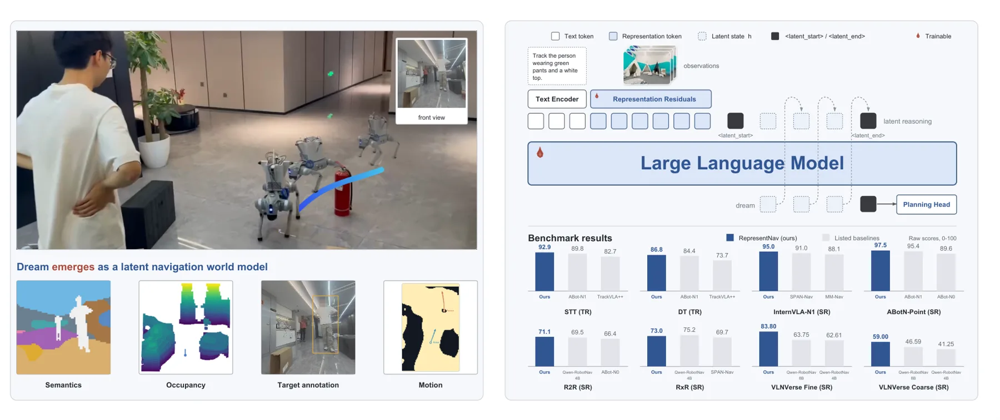
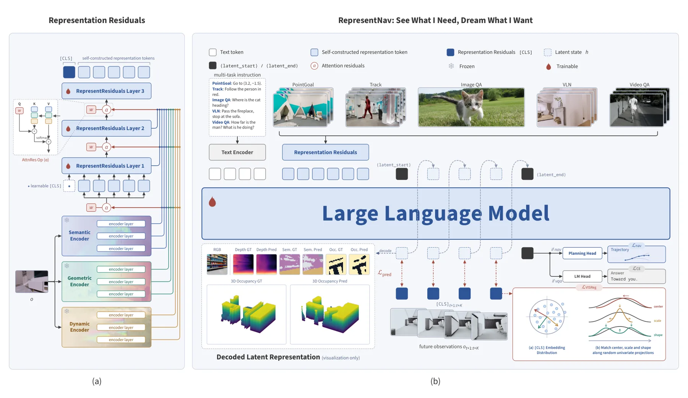
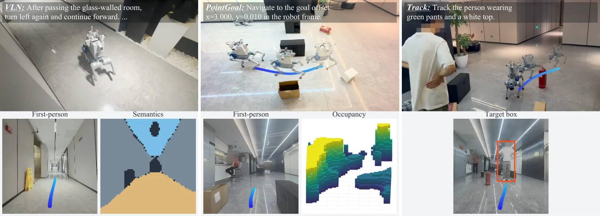
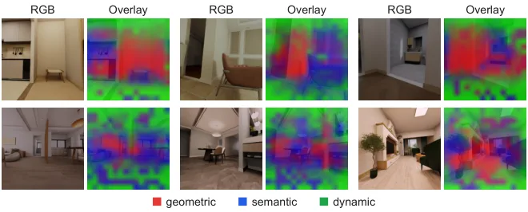
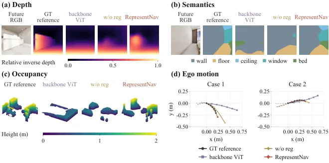
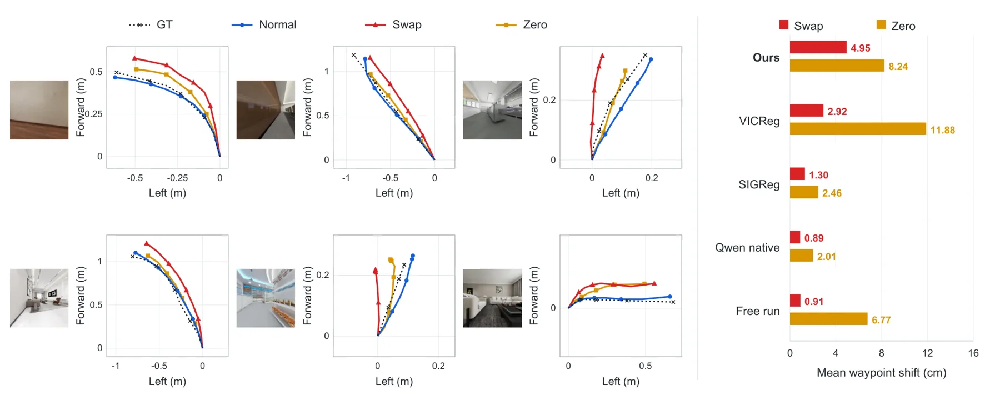

RepresentNav：在自构建表征空间里“看见所需、梦见所要”的导航基础模型
See What I Need, Dream What I Want: A Navigation Foundation Model on a Self-Constructed Representation Space
三个冻结基础模型（DINOv3 语义、Depth Anything 3 几何、OpenD4RT 动态）的全深度层特征经轻量 adapter 对齐后，由三层 Representation Residuals 用 learnable query 做逐层 softmax 加权求和，再经残差自注意力聚合，每视图输出一个 [CLS]。语言主干是 Qwen3-VL-4B，动作前自回归生成四个连续 latent，去匹配 0.4–1.6 s 后的真实 [CLS]（JEPA + VISReg，无 stop-gradient）。同样三个编码器，拼接接口得 87.30 SR / 28.70 CR，自构建空间得 93.45 / 18.05，加上梦得 95.00 / 13.45；但 VLN-CE 的 RxR 上仍略输 Qwen-RobotNav-4B。
VLNVerse fine SR
vs Qwen-RobotNav-8B
collision rate
EVT DT tracking
作者、单位与技术谱系 · Research context
作者与单位
研究脉络
- Qwen3-VL-4B语言/视觉主干关系：策略主干从该预训练模型初始化，视觉编码器保持冻结，新增接口在其上训练。[论文 §3.3]
- LaST-VLA 的注意力课程训练策略组件关系：Stage I 的“指令与观测隔离、latent 同时可见”课程沿用其做法，用来先教会策略通过梦行动。[论文 §3.3]
- LeWorldModel / JEPA 路线训练范式关系：预测表征而非像素，且不使用 stop-gradient 与动量目标；VISReg 负责防止表征塌缩。[论文 §2 / §3.2]
- DINOv3 / Depth Anything 3 / OpenD4RT输入先验关系：三者在语义、几何、动态三个方向提供全深度层特征，全部冻结，只被接口读取。[论文 §3.1 / §5.1]
作者与单位取自论文首页署名块；谱系关系来自论文 §2/§3 对自身技术来源的陈述，属有来源的解读。论文未披露导师关系，此处不推断。
方法本质拆解 · What actually changed
是不是微调？
是“在冻结先验上训练新接口”，不是微调主干。三个视觉基础模型与主干的视觉编码器全程冻结；新初始化并训练的是 Representation Residuals、[CLS] 嵌入、规划头与两个投影器。语言主干从 Qwen3-VL-4B 预训练权重起步，在 5.08M 混合样本上分两阶段训练 38,270 步。
有没有额外约束？
约束作用在“目标表征”上而不是输出上：VISReg 由中心项、尺度项、形状项组成，把每个未来时刻的目标拉到零均值、单位方差、沿随机方向近似高斯；没有 stop-gradient 也没有动量目标，因此预测与目标会互相带动。另外 Stage I 用注意力隔离（指令与观测互不可见，latent 同时看两者）作为结构性约束，强制策略先通过梦行动。
推理/后端到底做了什么？
推理是自回归生成四个连续 latent（每个回灌为下一步输入嵌入），最后一个 latent-end token 的隐状态经规划头直接出 8 个 waypoint；没有优化、没有建图、没有后处理。所谓“世界模型”是这四个 latent 的读出能力，解码器只在可视化与事后分析时使用，不参与控制回路。
方法本质是什么？
本质是把“用哪个编码器、取哪一层”从人工先验改成任务梯度决定的软选择：query 与层特征做内积后 softmax，等价于在“编码器×深度×空间位置”上学习一张注意力权重图；同一张图既定义策略看到的空间，也定义它预测的目标空间。它改变的是表征里“哪些结构被显式化”的不确定性，而不是几何求解的精度。
输入多视图 RGB + 指令；在冻结基础模型的全深度层特征上学习加权接口，并用未来 [CLS] 作为预测目标；输出 waypoint，直接效果是同一批编码器下碰撞率从 28.70% 降到 13.45%。

桥接价值Bridge
桥接价值
导航策略长期把“看什么”交给预训练编码器的最后一层，本文把接口本身变成可学习对象——这正好对应我们做多相机、多模态融合时最缺的一环：不同来源、不同深度的特征该怎么加权，目前基本靠人工选层或直接拼接。另一条可借的是“预测未来表征”当作世界模型：不生成像素、不建显式地图，只在特征空间里预测 0.4–1.6 s 后的状态，这与我们滑窗里的过程先验是同一类东西，只是把先验学了出来。
方法与模块Method
方法摘要
三个冻结基础模型（DINOv3 语义、Depth Anything 3 几何、OpenD4RT 动态）每隔若干层取特征，经轻量 adapter 对齐到主干视觉输入尺寸；三层 Representation Residuals 用 learnable query 对“当前隐状态 + 各编码器各层特征”做 softmax 加权求和，再过残差自注意力与前馈，每视图汇成一个 [CLS]。主干是 Qwen3-VL-4B，规划头输出当前机体系下 8 个 waypoint。动作前先做梦：LLM 自回归出 4 个连续 latent，投影后匹配未来 Δ=(2,4,6,8) 帧（5 Hz 下 0.4–1.6 s）的真实 [CLS]，损失是 MSE + VISReg（零均值/单位方差/高斯形状），梯度同时流向预测与目标、没有 stop-gradient。
可迁移模块
第一是层间加权接口：每个尺度一个 query 向量 + 隐状态偏置，softmax 后加权求和，代价只有几层 transformer，可以直接替换我们“取最后一层”或“手工拼三层”的做法。第二是以未来表征为监督的预测头：它预测的不是像素而是编码结果，因此不要求渲染可微、也不依赖光度一致性，适合放到滑窗优化里当可学习过程先验。第三是 VISReg 式目标正则：用批统计把目标拉到零均值、单位方差、高斯形状，防止自监督目标塌缩；这三块都不依赖导航的数据格式或动作空间。

证据Evidence
关键证据与数字
VLNVerse 细粒度 Full Test：SR 83.80 / SPL 80.90 / NE 1.60，对比 Qwen-RobotNav-8B 的 63.75 / 57.93 / 3.00，SR 高 20.05 点；粗粒度 59.00 vs 46.59（+12.41）。EVT-Bench 单目干扰跟踪 TR 85.5，比最好单目基线 ABot-N0 的 75.4 高 10.1，但碰撞率 11.89 远高于 TrackVLA++ 的 4.71。消融（4,000 条 point-goal 轨迹）里，同样三个编码器：拼接 SR 87.30 / CR 28.70 → 自构建空间 93.45 / 18.05 → 加梦 95.00 / 13.45；梦的目标换成主干 ViT 池化特征则 CR 反弹到 22.00，去掉 VISReg 回到 16.40。
边界与下一步Limits & Next Step
边界与风险
作者明确承认只在导航任务上验证，操作、灵巧手、人形全身控制均未测试。数字上也有不一致：VLN-CE 的 R2R 上SR 71.1 / SPL 66.6 / NE 3.75 领先，但 RxR 上 Qwen-RobotNav-4B 仍以 SR 65.0、NE 3.80 略优，说明“新 SOTA”不是全面覆盖；EVT 上成功率与安全性分离，碰撞率显著更高。真实机器人部分正文只有定性图，定量在附录两平台，未在正文给数。训练规模 5.08M 样本、38,270 步、16 卡，单卡实验室难以复现。
下一步实验
用我们已有的多相机序列做一个最小对照：同一几何后端，输入分别取“最后一层特征”和“层间加权特征”，只比下游位姿与深度精度，不比导航成功率——只有这样才能判断接口本身是否值钱。第二个实验把“预测 0.4 s 后表征”的辅助损失加到滑窗优化器里，检查它是否等价于一个可学习的过程噪声项：比较无观测段的轨迹漂移与协方差一致性。若两个实验都没有增益，这条路线对我们只剩“接口设计”的参考价值，不必追导航指标。







